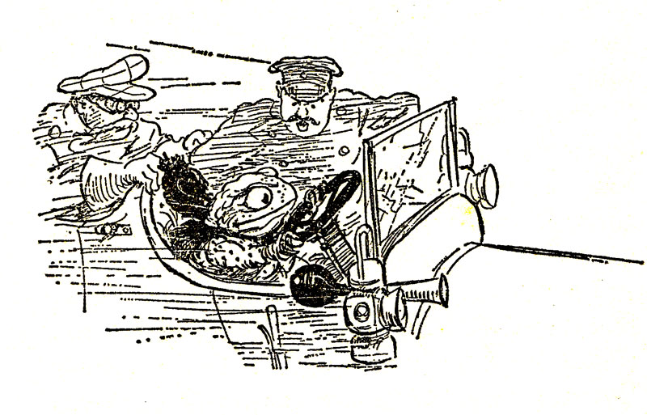
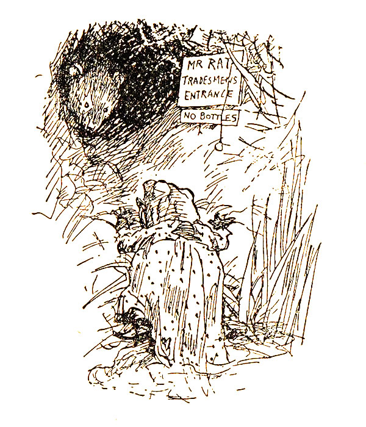

Last year I was poking around for comfort reads to revisit. One such was Kenneth Grahame's The Wind In The Willows. It is well worth revisiting on the regular. As an audiobook, it is absolutely a comfort to fall asleep to or generally relax a bit (Andrew Wincott's narration is top-notch). Toad's shenanigans are, of course, the most memorable, but Mole and Ratty's scenes are, unsurprisingly, where the comfort ultimately lies.
[ Note: I had almost an entire article written before bothering to search whether there was documentation about whether Tolkien was influenced by Grahame. Of course he was. I was writing this as if somehow I was the first one ever to make this connection, which is absurd. ]
The Wind In The Willows was altogether a fascinating book to rediscover. In the century since it was published (in April, 1908) we have been inundated with any number of anthropomorphic animal tales. The Redwall series comes to mind immediately. And though there were plenty of anthropomorphic animal tales before Wind in the Willows, it has arguably had the most influence on the genre. The ultimate adventure in The Wind In The Willows very definitely had an influence on none other than J.R.R. Tolkien in The Hobbit (published almost a full three decades later, in September 1937), and inevitably also to The Lord of the Rings. I'll leave you hanging with that thought for a moment. Except to say that I was very happy to come to that realization independently; in hindsight it seems obvious, but being able to chart literary influences like this can be incredibly satisfying. 
Before I get into that influence, I want to consider the animality of our protagonists. In Redwall, for instance, I don't think humans are ever mentioned (unless I just never read far enough in the series). Humans are very much a part of the Wind in the Willows world. For much of the story, Ratty, Mole, Badger, and Toad are basically just Edwardian British country gents with cute public school nicknames of various animals. But so far as the settings are concerned, Mole very much lives in a hole in the ground, as does Badger. Ratty is properly a water rat, and spends his time on the river, but engaging with the gentle-humanly pastime of messing about in boats
. Mole loses himself in the snowy forest at one point because he feels an instinctual draw towards his old hole, his home. In these situations one imagines them animal-sized and indeed in the well-known illustrations by E.H. Shepard (circa 1931) they are (mostly) proper animal size, and indeed also in Paul Bransom's illustrations from 1913 (where they also largely remain unclothed). But then Toad presents his caravan pulled by horses. Toad is disguised in a human washerwoman's dress. Toad drives a car in his washerwoman disguise with human passengers who don't blink an eye. Grahame (and his early illustrators), thus, appears to be inconsistent towards how he treats the anthropomorphism of his heroes. Does this matter? Is this a bad
thing, narratively speaking? Of course not. In my thinking, and in Grahame's, it highlights the fairy tale nature of the story, a certain surreality that a reader must accept and something that a small child doesn't even question. The paradoxical nature of it heightens the imaginative nature of the narrative; enhances the magic of it.

There's no indication that any of them work, and except for Toad, money is a non-consideration. Is there an essay to be made about Toad, his wealth, and, possibly because of this, how much more interaction he has with the human world than the others?
Alright. Let's get back to considering The Hobbit as successor to Wind in the Willows. Again, I am particularly looking at the ultimate adventure of our heroes. Ratty, Mole, Badger and Toad need to reclaim Toad Hall from the weasel and stoat denizens of the Wild Wood.
First let's consider our heroes: Mole, inevitably, becomes Bilbo. Badger, the wizard Gandalf. Amusingly in this scenario, Toad becomes none other than Thorin Oakenshield; however, Bilbo has that streak of Tookishness that is Toad-like, and all hobbits are fond of parties and speeches and song. Ratty? Not sure he has a direct correlation, except as enlarging the party, or as a helpful hand along the way. Toad Hall is The Lonely Mountain, and the stoats and weasels collectively become the dragon Smaug. The gold and riches; Toad's larder. The correlations don't have to be perfect but they are amusing to consider, which is enough in itself.
For those who have not read it or do not recall, let me briefly recount the events: Toad has escaped from incarceration and is staying at Badger's house with Ratty and Mole. In the time that he was in jail and his daring escape, the stoats and weasels from the Wild Wood have taken over Toad Hall and have armed sentries guarding it. Direct assault is out of the question. What to do.
Happily, Badger was good friends with Toad's father, who told him about a secret underground passage into the butler's pantry of Toad Hall, with proviso to only tell Toad when absolutely necessary. The stoats and weasels are to have a large banquet the following night, at which none will be armed save the sentries outside.
On his own initiative, Mole dons the washerwoman disguise and confronts the stoats and weasels on guard that an army is due to arrive to defend Toad's honor.
"...A hundred bloodthirsty badgers, armed with rifles, are going to attack Toad Hall this very night, by way of the paddock. Six boatloads of Rats, with pistols and cutlasses, will come up the river and effect a landing in the garden; while a picked body of Toads, known as the Die-hards, or the Death-or-Glory Toads, will storm the orchard and carry everything before them, yelling for vengeance. There won't be much left of you to wash, by the time they've done with you, unless you clear out while you have the chance!"Badger is well pleased with Mole's ruse. The evening arrives, they execute the plan, chaos ensues, and the stoats and weasels run for the hills. Toad Hall is reclaimed.
In The Hobbit, the actual reclamation is complicated by the presence of a dragon, Smaug, who is much more of an adversary than a bunch of layabout stoats and weasels. To further complicate matters are the men of Laketown. And no correlation of the Battle of Five Armies is to be found in The Wind in the Willows... unless, I suppose, you consider Mole's threat of a few factions of toads, rats, and badger (does Mole not consider his fellow moles threatening enough to make an imaginary army of?)
Otherwise, the lead up to it is exactly what happens in The Hobbit. It just takes them a longer journey to get to their destination. Tolkien took that final adventure and expanded on it, and made a much more narratively cohesive adventure story of it:
Gandalf has a map (that Thorin was hitherto unaware of) from Thorin's grandfather showing a secret way into the dwarves' ancestral home which they hope to reclaim from the invading dragon, Smaug. The "burglar" nature of Bilbo might originate in Mole's goading of the stoats and weasels (this could also be read as a corollary to Bilbo's conversation with Smaug, with different outcomes). Reading over other articles about Tolkien and Grahame, another connection is made to this reclaiming: the ultimate adventure in The Return of the King, The Scouring of The Shire, when the hobbits return home and have to reclaim The Shire from Saruman and his weasely servant Wormtongue. In Wind, the chapter is titled The Return of Ulysses, which is a reference to Homer's Odysseus, and his return home. That reference seems better suited to The Scouring of the Shire, frankly, just that Grahame appears to enjoy a good classical reference, and Tolkien was dead set against making direct references to things not of his Middle Earth.
One of the other points brought by fellow bloggist's was the fact that Grahame was writing pre-WWI, and Tolkien was very much post-WWI, having taken part in it himself. The Hobbit was published on the eve of WWII, and The Lord of the Rings post-WWII. So their perspectives are necessarily vastly different: Grahame is seen to be much more traditionalist British, conservative about the way of life he depicts, whereas Tolkien, as much as he was fond of the comforts of the countryside, has no qualms about seriously throwing his protagonists into The Wide World
, as Grahame calls it, and of which Grahame has his characters vehemently reject and ignore. Tolkien's hobbits leave all their comforts behind and fully engage with the wider world, and alter it irrevocably. Would Moley carry the ring to Mordor?
The other completely obvious influence that I should've noticed was to C.S. Lewis's Narnia books. Plenty of talking animals in those books. Plenty of old British values, but, like Tolkien, much affected by the wars.
Anyway. The Wind in the Willows will be revisited at least annually from here on out.